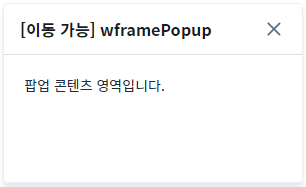
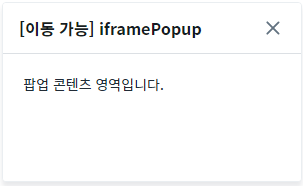
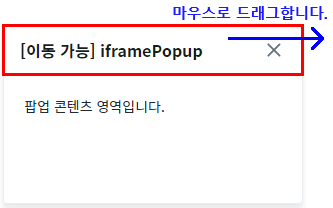
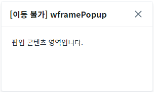
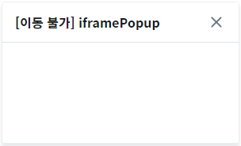
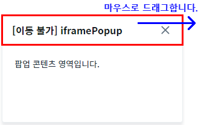

'$p.openPopup' 메소드를 사용하여 팝업을 생성할 때 팝업의 위치를 고정하는 예제입니다. 고정된 팝업은 사용자가 팝업의 타이틀 영역을 마우스로 드래그하여 팝업을 이동시킬 수 없습니다.
이 기능은 '$p.openPopup' 메소드의 두 번째 인자 JSON의 'fixPosition' 속성에 설정할 수 있습니다. 'fixPosition' 속성은 두 번째 인자의 'type' 속성이 'wframePopup' 또는 'iframePopup'으로 설정되었을 때 동작합니다.
'fixPosition' 속성의 설정에 따른 동작은 다음과 같습니다. - "false" : [default] 팝업의 위치를 고정하지 않습니다. - "true" : 팝업의 위치를 고정합니다.
이 예제는 마우스 사용이 가능한 환경에서 정상 동작합니다.
팝업의 위치 고정하지 않기
팝업의 위치 고정하기
예제 영역 '(기본 설정) 팝업의 위치 고정하지 않기'에서 테스트합니다.1
STEP 1: 위치를 고정하지 않은 'wframe' 팝업을 생성합니다.
'1.1 wframe 팝업 열기' 버튼을 클릭합니다.2
STEP 2: 실행된 결과를 확인합니다.
팝업이 생성됩니다. 생성된 팝업의 타이틀은 '[이동 가능] wframePopup'입니다.
Image 1.브라우저(Chrome) 실행 예시

3
STEP 3: 팝업의 타이틀 영역을 마우스로 드래그하여 위치를 이동시킵니다.
Image 2.브라우저(Chrome) 실행 예시
4
STEP 4: 실행된 결과를 확인합니다.
팝업의 위치가 이동됩니다.
5
STEP 5: 위치를 고정하지 않은 'iframe' 팝업을 생성합니다.
'1.2 iframe 팝업 열기' 버튼을 클릭합니다.6
STEP 6: 실행된 결과를 확인합니다.
팝업이 생성됩니다. 생성된 팝업의 타이틀은 '[이동 가능] iframePopup'입니다.
Image 3.브라우저(Chrome) 실행 예시

7
STEP 7: 팝업의 타이틀 영역을 마우스로 드래그하여 위치를 이동시킵니다.
Image 4.브라우저(Chrome) 실행 예시

8
STEP 8: 실행된 결과를 확인합니다.
팝업의 위치가 이동됩니다.
예제 영역 '팝업의 위치 고정하기'에서 테스트합니다.1
STEP 1: 위치를 고정한 'wframe' 팝업을 생성합니다.
'2.1 wframe 팝업 열기' 버튼을 클릭합니다.2
STEP 2: 실행된 결과를 확인합니다.
팝업이 생성됩니다. 생성된 팝업의 타이틀은 '[이동 불가] wframePopup'입니다.
Image 5.브라우저(Chrome) 실행 예시

3
STEP 3: 팝업의 타이틀 영역을 마우스로 드래그하여 위치를 이동시킵니다.
Image 6.브라우저(Chrome) 실행 예시
4
STEP 4: 실행된 결과를 확인합니다.
팝업의 위치가 이동되지 않습니다.
5
STEP 5: 위치를 고정한 'iframe' 팝업을 생성합니다.
'2.2 iframe 팝업 열기' 버튼을 클릭합니다.6
STEP 6: 실행된 결과를 확인합니다.
팝업이 생성됩니다. 생성된 팝업의 타이틀은 '[이동 불가] iframePopup'입니다.
Image 7.브라우저(Chrome) 실행 예시

7
STEP 7: 팝업의 타이틀 영역을 마우스로 드래그하여 위치를 이동시킵니다.
Image 8.브라우저(Chrome) 실행 예시

8
STEP 8: 실행된 결과를 확인합니다.
팝업의 위치가 이동되지 않습니다.
'$p.openPopup' 메소드의 두 번째 인자 JSON의 'fixPosition' 속성을 사용하여 구현합니다. 'fixPosition' 속성은 두 번째 인자 JSON의 'type' 속성이 'wframePopup' 또는 'iframePopup' 또는 'pageFramePopup'으로 설정되었을 때 동작합니다. 세부 스크립트는 아래의 예시에 작성되어 있습니다.
Example 1.Script - 팝업의 위치 고정하지 않기
// 예제 파일에서는 스크립트 'scwin.btn_exam1_1_onclick'과 'scwin.btn_exam1_2_onclick'에 작성되어 있습니다. // 팝업 생성 옵션 var jsnOptions = { id: "popup_wframe1", type: "wframePopup", // [필수] 팝업의 유형. "wframePopup" 또는 "iframePopup" 또는 "pageFramePopup" fixPosition: "false", // [필수 고정 값] 팝업의 위치를 고정하지 않음(이동 가능), popupName: "[이동 가능] wframePopup" }; $p.openPopup("/page/P00404P01.xml", jsnOptions);
Example 2.Script - 팝업의 위치 고정하기
// 예제 파일에서는 스크립트 'scwin.btn_exam2_1_onclick'과 'scwin.btn_exam2_2_onclick'에 작성되어 있습니다. // 팝업 생성 옵션 var jsnOptions = { id: "popup_wframe2", type: "wframePopup", // [필수] 팝업의 유형. "wframePopup" 또는 "iframePopup" 또는 "pageFramePopup" fixPosition: "true", // [필수 고정 값] 팝업의 위치를 고정하기(이동 불가), popupName: "[이동 불가] wframePopup" }; $p.openPopup("/page/P00404P01.xml", jsnOptions);
$p.openPopup( url , options , params , target )
options.fixPosition
options.type